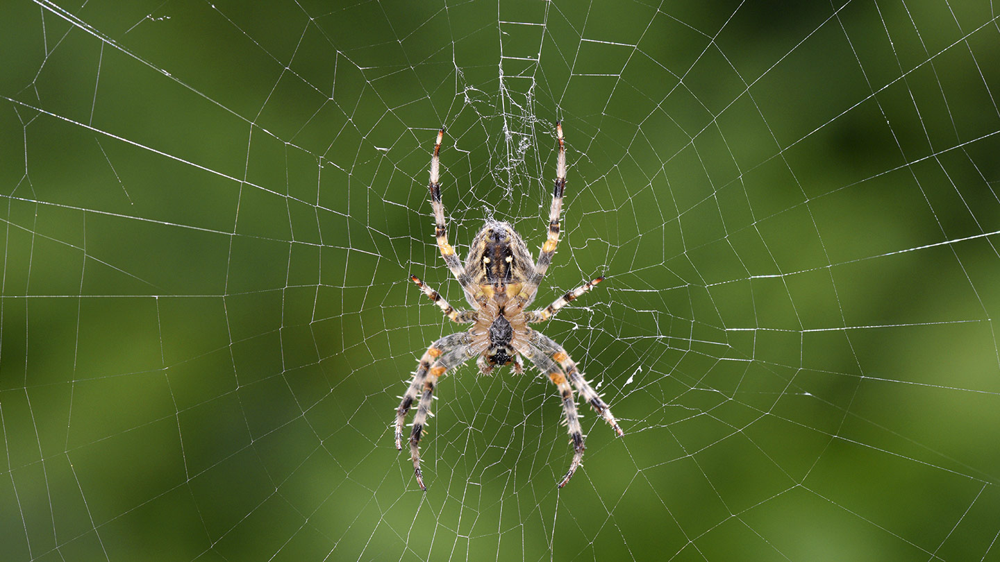

Spiders are arachnids, a class of arthropods that also includes scorpions, mites, and ticks. There are more than 45,000 known species of spiders, found in habitats all over the world. There's a spider with a cartoonish butt, spiders that can jump on demand, and cannibal spiders that look like pelicans.
Spiders live in almost every habitat on earth. The only places where there are no spiders are the polar regions, the highest mountains and the oceans. A few spider species have invaded the ocean's edge, living in the rock and coral crevices of the intertidal zone.